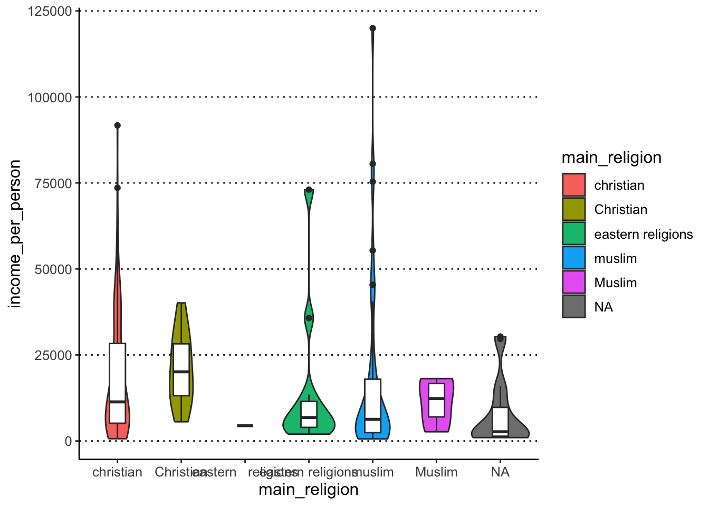

Homework 03 August 2021
These exercises continue from last week’s, so you need to make sure you’ve read the gapminder dataset:
gapminder <- read_csv("data_raw/gapminder2010_socioeconomic.csv")Task 5
Let’s take the scatterplot from our previous exercise and continue working on it:
ggplot(data = gapminder,
mapping = aes(x = life_expectancy, y = income_per_person)) +
geom_point()
- Colour the points brown, make them 80% transparent and increase their size.
- Add a smooth trend line to the plot.
Hint
Usegeom_smooth()to add a trend line to the data. - Modify the previous plot and colour the points by the variable “world_region”.
- Assign (
<-) the plot to an appropriately named object.
Answer
We can use the options colour, alpha (transparency) and size to modify the points as requested:
ggplot(data = gapminder,
mapping = aes(x = life_expectancy, y = income_per_person)) +
geom_point(colour = "brown", alpha = 0.8, size = 3)#> Warning: Removed 6 rows containing missing values (geom_point).
To add a trend line, we add a new geometry to our plot:
ggplot(data = gapminder,
mapping = aes(x = life_expectancy, y = income_per_person)) +
geom_point(colour = "brown", alpha = 0.8, size = 3) +
geom_smooth()#> `geom_smooth()` using method = 'loess' and formula 'y ~ x'#> Warning: Removed 6 rows containing non-finite values (stat_smooth).#> Warning: Removed 6 rows containing missing values (geom_point).
To colour the points by a variable, we move the colour option into the aes() giving it the variable name instead of a colour name (ggplot takes care of picking some default colours for us):
ggplot(data = gapminder,
mapping = aes(x = life_expectancy, y = income_per_person)) +
geom_point(aes(colour = world_region)) +
geom_smooth()#> `geom_smooth()` using method = 'loess' and formula 'y ~ x'#> Warning: Removed 6 rows containing non-finite values (stat_smooth).#> Warning: Removed 6 rows containing missing values (geom_point).
To save the plot into an object, we use the assignment operator <-, like so:
income_life_expectancy_plot <- ggplot(data = gapminder,
mapping = aes(x = life_expectancy, y = income_per_person)) +
geom_point(aes(colour=world_region)) +
geom_smooth()Note: assigning it to a variable helps your code stay clean and also helps when it comes to saving plots.
If you want to see the plot, you have to print it on the console
income_life_expectancy_plot#> `geom_smooth()` using method = 'loess' and formula 'y ~ x'#> Warning: Removed 6 rows containing non-finite values (stat_smooth).#> Warning: Removed 6 rows containing missing values (geom_point).
Task 6
Make a violin + boxplot of main_religion (x-axis) by income_per_person (y-axis) - where the violin is coloured by the x variable but the boxplot is not (it is white by default). Give the boxplot a width of 0.25.
In terms of figure design, what do you think about our choice of colouring the inside of the violin plots by main_religion?
Answer
We can make the desired plot by passing the fill aesthetic to the geom_violin() only, and we can set the width option in geom_boxplot():
ggplot(gapminder, aes(x = main_religion, y = income_per_person)) +
geom_violin(aes(fill = main_religion)) +
geom_boxplot(width = 0.25)#> Warning: Groups with fewer than two data points have been dropped.
Colouring the violin plots by main_religion is redundant with the x-axis, so it doesn’t seem justified in this case. Maybe if this plot was part of a series of other plots where the colouring was necessary, then it might make sense to colour them, for consistency across figure panels. In that case, we could still improve this plot by remove the colour legend on the right, to de-clutter the plot (we will see how to do this in the next lesson).